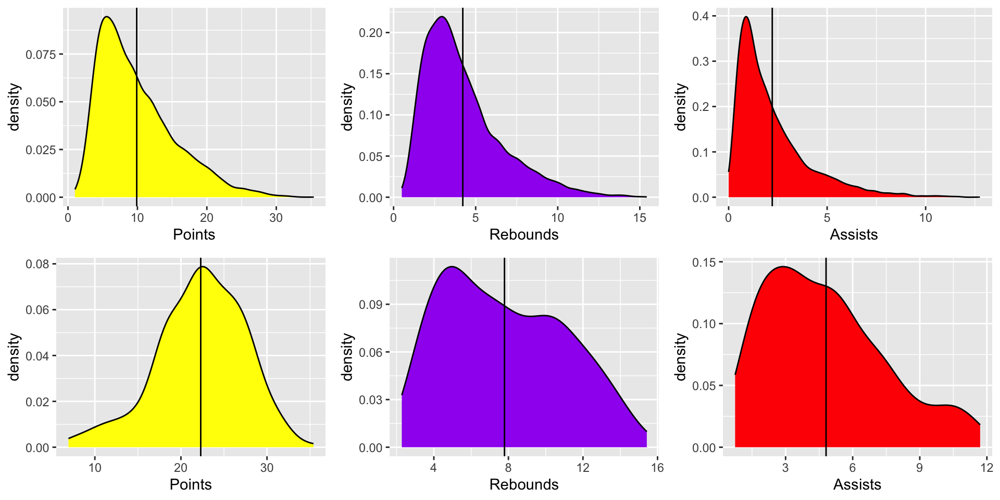

A total of two datasets will be used in this project, namely Seasons_Stats.csv and All.NBA.1984-2018.csv. These two datasets were all originally parsed from a website called Basketball Reference. Nevertheless, I chose to use the more ready-to-go datasets provided by the users on Kaggle.
The Seasons_Stats.csv file can be accessed through this link. This dataset contains players’ game statistics from year 1950 to 2017. To be more specific, there are a total of 53 columns, and each column(except the first column, which is just a column of index starting from 0 to 24690) represents an attribute of that player. These attributes include basic statistics such as games played (G) and total points scored in that season (PTS) as well as the more advanced metrics such as Win Shares (WS), which is an estimate of the number of wins contributed by that player.
The All.NBA.1984-2018.csv file can be accessed through this link. This dataset contains all the players that are selected to be in All-NBA teams starting from the 1984-1985 season to the 2016-2017 season. One thing to note is that before the 1988-1989 season, only 2 teams of All-NBA teams were selected each year; and starting from the 1988-1989 season, a total of 3 teams of All-NBA teams were selected each year. This dataset has a total of 32 columns, and each column represents an attribute of that player. These attributes include basic statistics such as the season which that player was selected in the All-NBA teams (Season) as well as the more advanced metrics such as effective field goal percentage (eFG%).
In addition, I will not be using all the data from these two datasets in that some important advanced data for the 1950s-1970s are missing (because some of the advanced metrics were only introduced in the 80s). Moreover, the league and the players in this league have evolved throughout the years, so the data from earlier seasons can hardly be doing a good job of predicting whether or not a current player gets chosen to be on the All-NBA team. Consequently, I will only be looking at the data from 2000 (the year I was born) to 2017 (the latest year that these two datasets have) for this project.
Every year, there are more than 450 NBA players that play in a single season, but only 15 of them would get selected into the All-NBA teams for that season. This makes me wonder what makes these 15 players stand out from all the NBA players. Consequently, the question that I am trying to answer is: what characteristics of an NBA player are more indicative of selection to the All-NBA teams, and to what extent can I predict the selection of All-NBA team using the players’ statistics?
After completing the data wrangling part, we can now see a total of 7220 rows of players’ stats from 2000-2017.
dim(players_pergame)## [1] 7220 24In addition, there are 273 rows of All-NBA players (All_NBA = 1) where in fact we should only have 270 players (18 seasons * 15 players/season = 270 players). This is because Dikembe Mutombo was counted 2 extra times (he switched teams twice during the 2000-2001 season), and Chauncey Billups was counted a total of 1 extra time (he switched teams once during the 2008-2009 season). Nevertheless, I decide to keep these 3 extra entries because, though on different teams, their stats could still represent their overall performances within that season.
## # A tibble: 18 × 2
## year `length(Name)`
## <dbl> <int>
## 1 2000 15
## 2 2001 17
## 3 2002 15
## 4 2003 15
## 5 2004 15
## 6 2005 15
## 7 2006 15
## 8 2007 15
## 9 2008 15
## 10 2009 16
## 11 2010 15
## 12 2011 15
## 13 2012 15
## 14 2013 15
## 15 2014 15
## 16 2015 15
## 17 2016 15
## 18 2017 15Let’s compare the distributions of some basic features (namely points, rebounds, and assists) between All_NBA players and players that were not selected in any All-NBA teams. The plots in the first row are using all the players’ data, and the plots in the second row are using only the players that were selected in the All-NBA Teams. The vertical lines of each plot represent the average value of that corresponding feature and population.

Descriptions and justifications of the methodology:
Given that my dataset players_pergame, after pre-processing and data wrangling, has a binary outcome variable named All_NBA, I would choose to implement a multivariate logistic regression for this dataset first. Using a logistic regression model on a binary outcome dataset seems to be a go-to strategy first and can be used to compare to other more advanced and computationally heavy models later on. In addition, all of my variables that concern players’ performances are continuous variables, which also makes it more reasonable to try out a regression model first. Furthermore, I am considering using a random forest model, which is a powerful method that generally performs well. It also gives us a lot of opportunities to tune our parameters for the model, such as mtry, so as to ameliorate our model’s performance and prediction results. Moreover, tree-based methods (and boosting) generally performs better on imbalanced dataset than other classification algorithms. Consequently, I decided to implement multivariate logistic regression and random forests on my dataset. Lastly, I would also like to give some justifications for not choosing some of the algorithms that we mentioned in class. First of all, linear regression was not chosen here since our outcome variable is binary. Moreover, LDA and QDA were not selected here because, as you may tell from the above 6 plots, some of the independent variables do not follow Gaussian distributions, which violates the assumptions for LDA and QDA. Lastly, decision tree was not selected in that random forest gives us certain advantages over decision trees such as more stability and less likely to overfit.